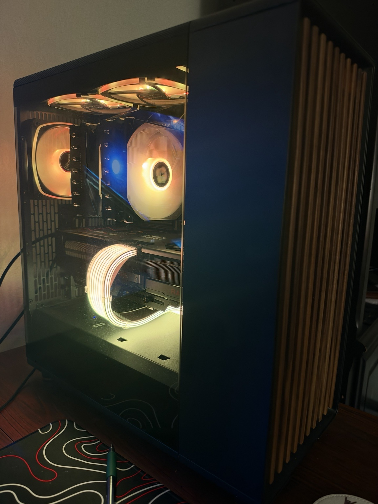

Welcome to Build Your First PC

Building a PC Doesn't Have to Be Complicated
Building your first PC can seem overwhelming when you don't know where to start. There are many different components, brands, prices, and technical terms to understand before you begin.
This website is designed to make PC building easier for beginners. You will learn what each component does, how to choose compatible parts, and how to put everything together to build your first computer.
Where Should You Start?
Start by learning about the components that make up a PC. Once you understand what each component does, you can begin choosing parts based on your budget and what you plan to use your computer for.
Use the navigation menu above to learn about PC components, choosing compatible parts, assembling your computer, and getting additional help.